Mapa brwi w mm dla studia PMU
Kamera wyznacza na twarzy klientki początek, łuk i koniec brwi oraz oś symetrii, w milimetrach. Poprawiasz punkty, zapisujesz mapę i kartę klienta.
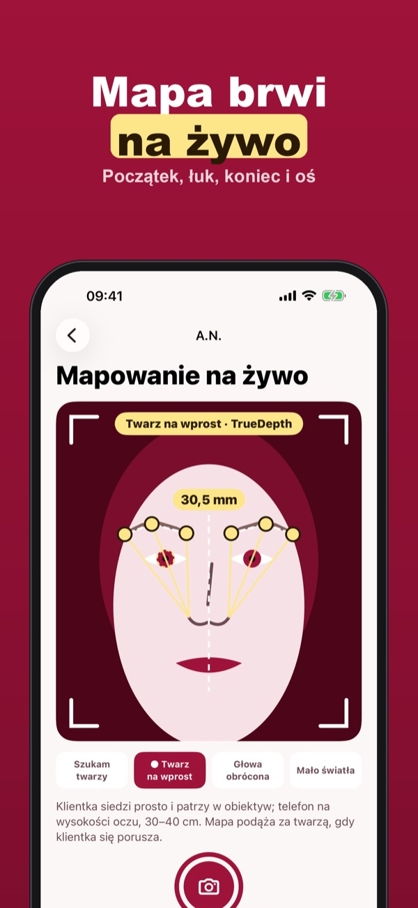
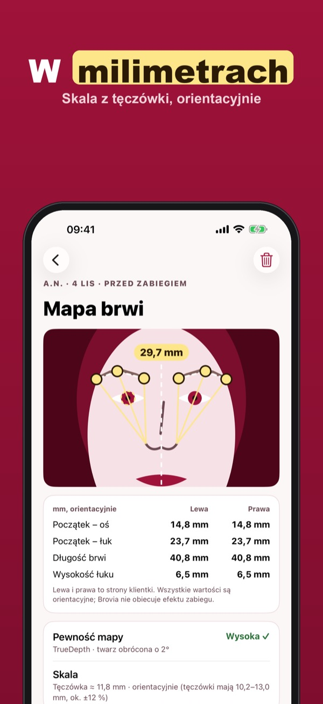
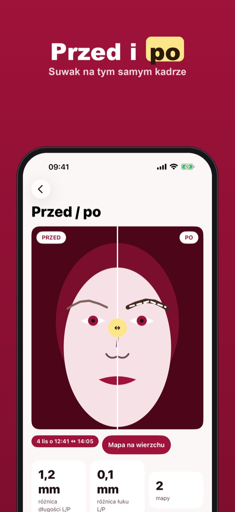
Brovia to narzędzie do mapowania brwi dla linergistek i stylistek brwi. Kamera iPhone’a śledzi geometrię twarzy na żywo, rysuje linie od skrzydełka nosa przez kącik oka i tęczówkę oraz oś symetrii, a skala w milimetrach pochodzi z tęczówki – orientacyjnie.
Trzy karty klientów z mapą na żywo, korektą punktów i porównaniem przed / po działają bez zakupu. Brovia Plus to jednorazowy zakup: nieograniczone karty, PDF, przypomnienia o rotuszu i mapa na rotuszu na wygojonych brwiach. Bez subskrypcji.
Brovia mierzy geometrię twarzy orientacyjnie i pomaga w pracy, ale nie zastępuje Twojej oceny. Nie rozpoznaje osób i nie obiecuje efektu zabiegu. Zdjęcia, mapy i podpisy zostają na tym iPhonie.
Terms of Use (EULA): https://www.apple.com/legal/internet-services/itunes/dev/stdeula/
Privacy: https://apps.baytech.nl/brovia-eu/
Hartă în mm pentru studio PMU
Camera trasează pe fața clientei începutul, arcul și coada sprâncenei, plus axa de simetrie, în milimetri. Corectezi punctele și salvezi harta în fișa clientei.
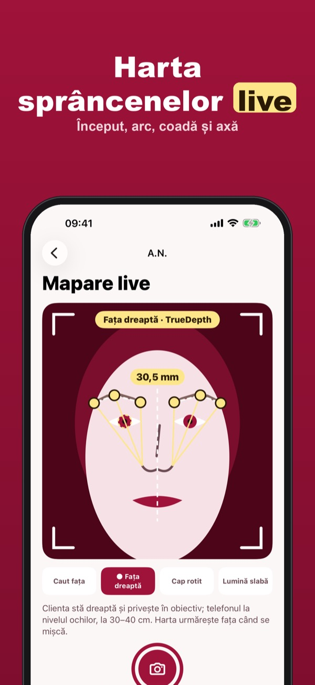
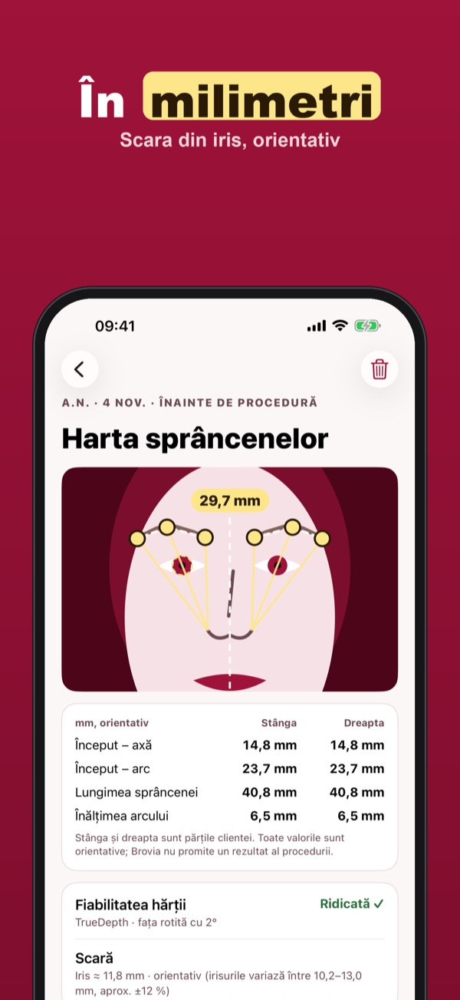
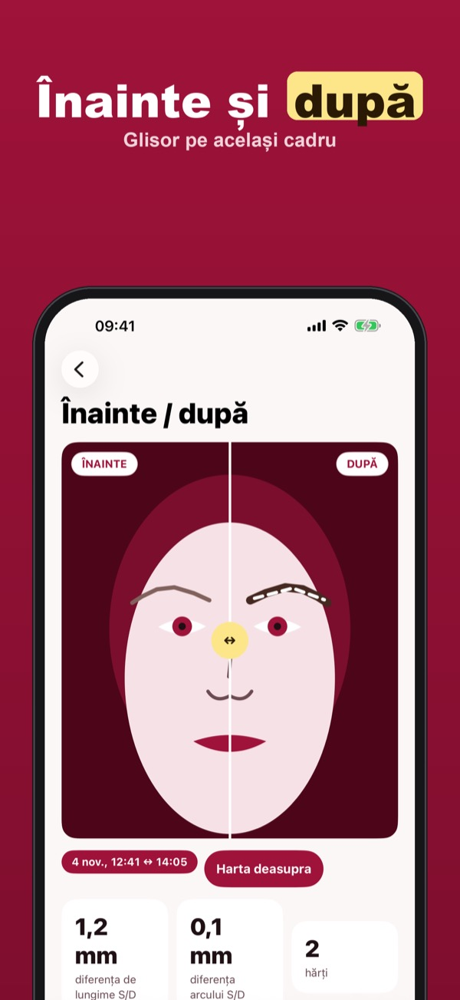
Brovia este un instrument de mapare a sprâncenelor pentru artiștii PMU și stiliștii de sprâncene. Camera iPhone-ului urmărește geometria feței în timp real, trasează liniile de la aripa nasului prin colțul ochiului și iris, plus axa de simetrie; scara în milimetri vine din diametrul irisului – orientativ.
Trei fișe de cliente cu hartă în timp real, corectarea punctelor și comparație înainte / după funcționează fără cumpărare. Brovia Plus este o achiziție unică: fișe nelimitate, PDF, mementouri pentru retuș și harta la retuș peste sprâncenele vindecate. Fără abonament.
Brovia măsoară geometria feței orientativ și te ajută în lucru, dar nu îți înlocuiește judecata. Nu recunoaște persoane și nu promite rezultatul procedurii. Fotografiile, hărțile și semnăturile rămân pe acest iPhone.
Terms of Use (EULA): https://www.apple.com/legal/internet-services/itunes/dev/stdeula/
Privacy: https://apps.baytech.nl/brovia-eu/
Mapa de cejas en mm para PMU
La cámara marca en la cara de la clienta el inicio, el arco y la cola de la ceja, además del eje de simetría, en milímetros. Corriges los puntos y guardas el mapa.
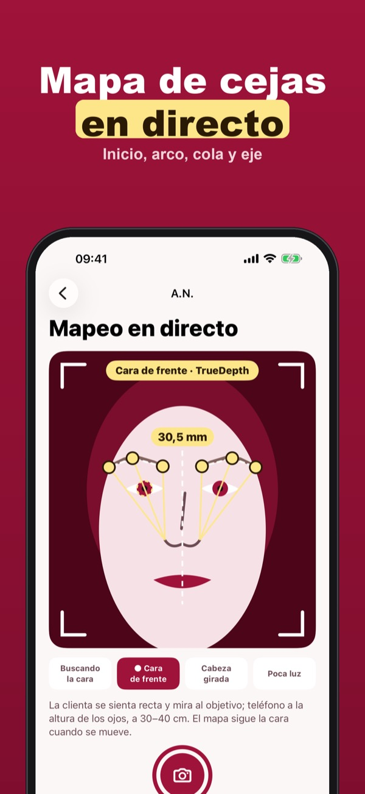
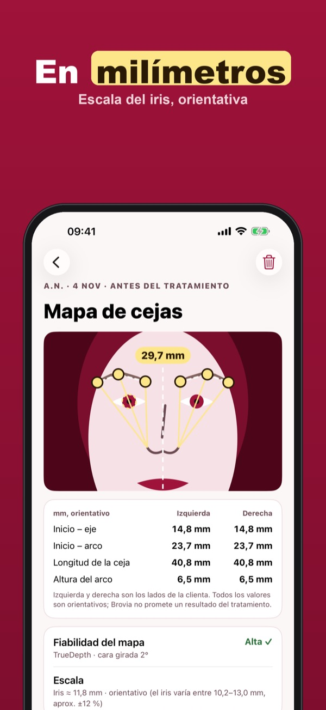
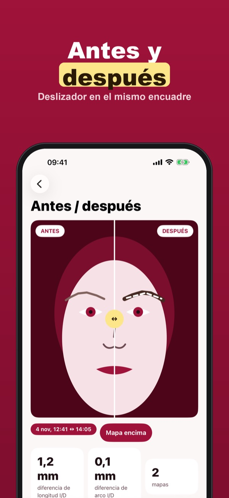
Brovia es una herramienta de diseño de cejas para micropigmentadoras y estilistas de cejas. La cámara del iPhone sigue la geometría de la cara en directo, traza las líneas desde la aleta de la nariz por el lagrimal y el iris y el eje de simetría; la escala en milímetros sale del iris, de forma orientativa.
Tres fichas de clientas con mapa en directo, corrección de puntos y comparación antes / después funcionan sin compra. Brovia Plus es una compra única: fichas sin límite, PDF, recordatorios de retoque y el mapa en el retoque sobre las cejas cicatrizadas. Sin suscripción.
Brovia mide la geometría de la cara de forma orientativa y te ayuda en el trabajo, pero no sustituye tu criterio. No reconoce personas ni promete el resultado del tratamiento. Las fotos, los mapas y las firmas se quedan en este iPhone.
Terms of Use (EULA): https://www.apple.com/legal/internet-services/itunes/dev/stdeula/
Privacy: https://apps.baytech.nl/brovia-eu/
Brauenkarte in mm für PMU
Die Kamera zeigt im Gesicht der Kundin Anfang, Bogen und Ende der Braue sowie die Symmetrieachse, in Millimetern. Du korrigierst die Punkte und speicherst die Karte.
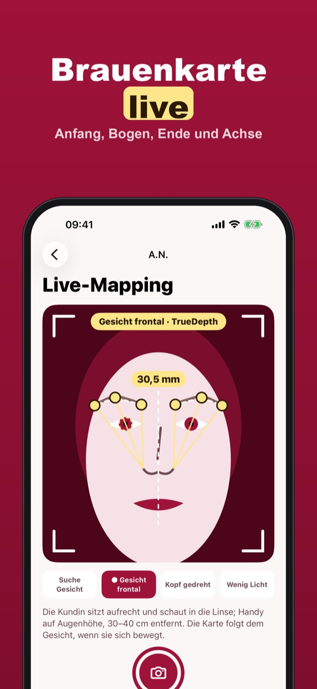
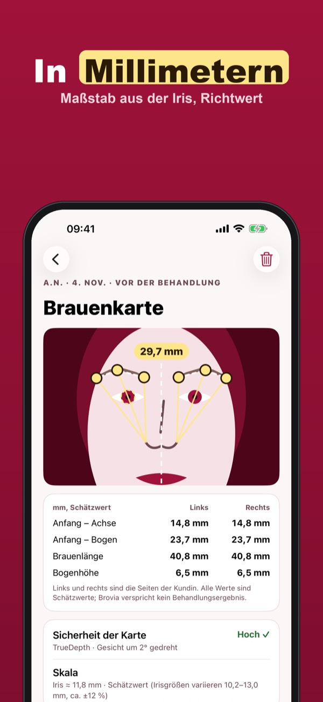
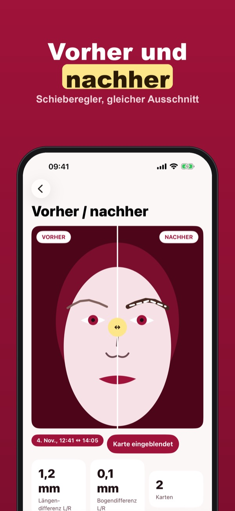
Brovia ist ein Werkzeug für das Augenbrauen-Mapping im PMU-Studio. Die iPhone-Kamera verfolgt die Gesichtsgeometrie live, zieht Linien vom Nasenflügel über den inneren Augenwinkel und die Iris sowie die Symmetrieachse; der Millimetermaßstab kommt aus dem Irisdurchmesser – als Richtwert.
Drei Kundenkarten mit Live-Karte, Punktkorrektur und Vorher-/Nachher-Vergleich gehen ohne Kauf. Brovia Plus ist ein Einmalkauf: unbegrenzt Kundenkarten, PDF, Erinnerungen an die Nacharbeit und die Karte bei der Nacharbeit über den abgeheilten Brauen. Kein Abo.
Brovia misst die Gesichtsgeometrie als Richtwert und unterstützt deine Arbeit, ersetzt aber nicht dein Urteil. Die App erkennt keine Personen und verspricht kein Behandlungsergebnis. Fotos, Karten und Unterschriften bleiben auf diesem iPhone.
Terms of Use (EULA): https://www.apple.com/legal/internet-services/itunes/dev/stdeula/
Privacy: https://apps.baytech.nl/brovia-eu/
Simmetria in mm per studi PMU
La fotocamera traccia sul viso della cliente inizio, arco e coda del sopracciglio e l’asse di simmetria, in millimetri. Correggi i punti e salvi la mappa.
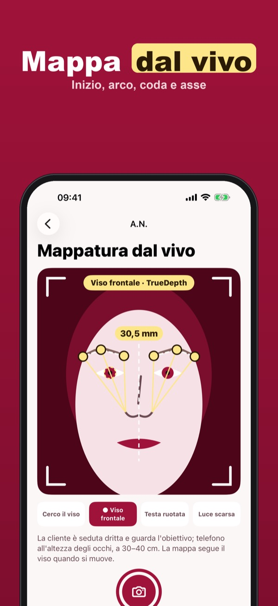
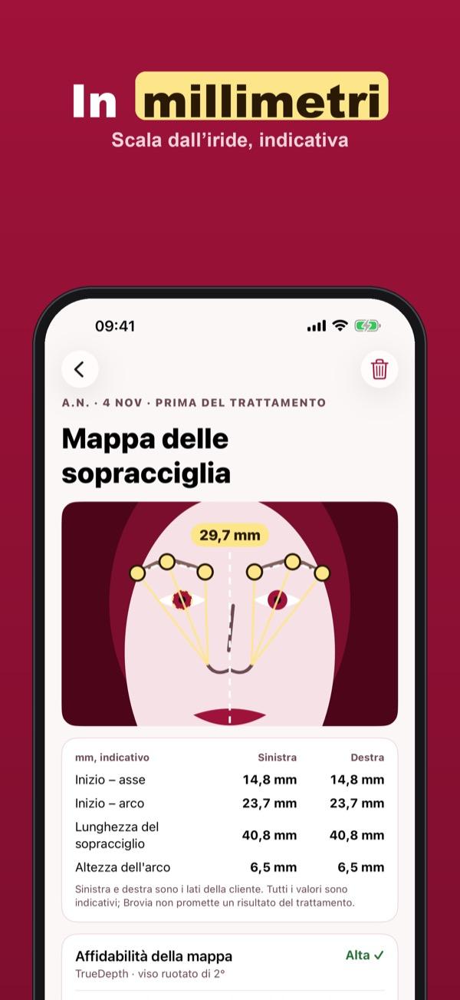
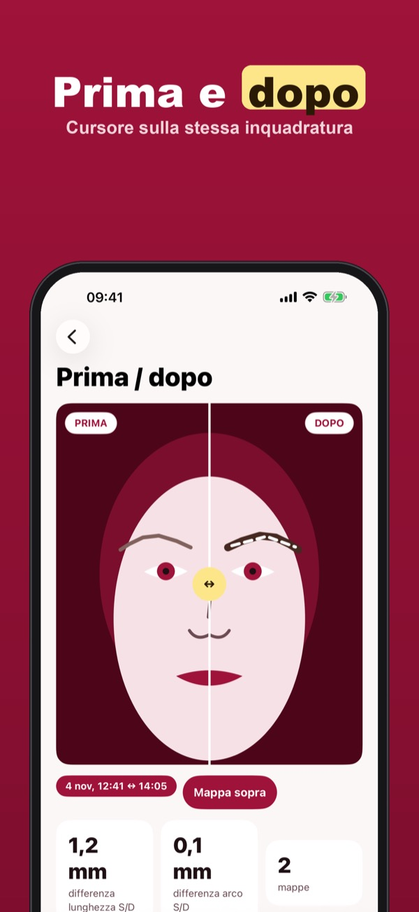
Brovia è uno strumento di mappatura delle sopracciglia per dermopigmentiste e brow stylist. La fotocamera dell’iPhone segue la geometria del viso dal vivo, traccia le linee dall’ala del naso attraverso l’angolo interno dell’occhio e l’iride e l’asse di simmetria; la scala in millimetri deriva dall’iride, in modo indicativo.
Tre schede cliente con mappa dal vivo, correzione dei punti e confronto prima / dopo si usano senza acquisto. Brovia Plus è un acquisto unico: schede illimitate, PDF, promemoria dei ritocchi e la mappa al ritocco sulle sopracciglia guarite. Nessun abbonamento.
Brovia misura la geometria del viso in modo indicativo e ti aiuta nel lavoro, ma non sostituisce il tuo giudizio. Non riconosce le persone e non promette il risultato del trattamento. Foto, mappe e firme restano su questo iPhone.
Terms of Use (EULA): https://www.apple.com/legal/internet-services/itunes/dev/stdeula/
Privacy: https://apps.baytech.nl/brovia-eu/